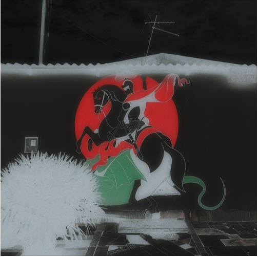

Meu nome é Felipe Vianna @f.vianna , menino preto nascido em 1993 quando o sol estava em câncer. Pai da Sophie, Mult artista (Diretor criativo, Fotógrafo, Diretor, Vídeomaker, Dj, Influencer, Articulador Cultural, Artista Visual, Grafiteiro) De um tudo um pouco e querendo ser um pouco mais. Gasto minha existência fazendo as coisas existirem. Há 9 anos invento moda, registro o que vejo, passo pro mundo o que gosto, tento caber onde meu povo não coube. Dentre algumas coisas que resumem onde estive, cito a Revista Vogue, SPFW ja trabalhei com marcas como Facebook, Tidal, Spotfy, Heineken, Budweiser, 99, Hering. ja toquei a abertura do show do KL Jay do FBC e Vhoor. Criador do @StudioF.Vianna, fiz com que o centro conhecesse o São Jorge, que o São Jorge conhecesse o Beco – espaço da periferia revitalizado por meio da arte: o @becosj. moro em São Paulo, mas desejo mesmo estar no topo. Pretos no topo e eu falo sério.
Imagem
